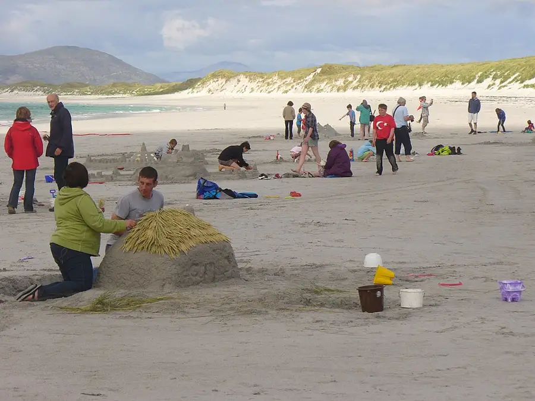

Big Sandcastle, One Bucket Towers
Wet sand, one big bucket, pat-pat-turn: a tower stands. Dry sand runs through your fingers. Wet sand stands up. That is the whole summer science, built.
Ages 3–315–20 min4 materials
- Ages
- 3–3
- Group
- 2–12 kids
- Time
- 15–20 min
- Where
- Outdoors
- Prep
- Some prep needed

Setup
Wet the sand yourself before anyone is called and learn its temper with your own hands: pack a bucket, turn it, lift, if the tower comes out whole, the sand is at building dampness; if it slumps, add water a can at a time and test again, because at three the difference between a castle and a disappointment is a watering can nobody used in time. Check the whole sand place the way the season demands: rake through it with the scoop for anything buried that small hands should not find (glass, sharp shells, the leavings of other people's picnics), and check its temperature with the back of your hand. Summer sand in full noon sun can be too hot for the knees that will kneel in it, and a shaded corner or a morning hour is this record's honest fix. Set the water bucket where its spills do the sand good, not the path.
Materials
- a sand place with sand that can be wetted (a sandbox, sandpit, or a stretch of beach sand the adult has checked, plus a bucket of water and a small watering can for keeping it at building dampness)
- big buckets, one per builder at a time (sturdy, smooth-rimmed, big enough that a tower made from one is worth decorating)
- big scoops for filling (short-handled, blunt, a scoop that bends under wet sand is retired before it teaches frustration)
- found decorations (shells, smooth pebbles, sticks and fallen leaves gathered from the sand place itself. Adult-checked, nothing sharp, nothing that was living in it)
Steps
- Gather the builders at the sand's edge and say the plain framing: 'Summer gives us sand and water, and together they do a trick. Dry sand, watch, ' (let a handful run through your fingers, all of it, to the last grain) '. Runs away. It cannot stand. But wet sand, ' (pack the bucket as the group's first lesson, pat-pat, turn, lift: a tower) ', STANDS. That is the whole trick, and it is a real one: the water holds the grains together, like tiny hands. Today we build towers out of the holding kind.' State the laws whole: 'Sand stays LOW: it is scooped, carried low, and built with. It is never thrown, and a handful that rises above waist height is set down and the building starts again. Water goes on the SAND, from the can, at the adult's end of the sand place. Castles are built in the building ground, where knees and towers have room. Nobody builds in the walking way.'
- First tower together, yours: fill the big bucket at full ceremony, scoop, scoop, scoop, with the room counting the scoops because filling is the record's rhythm section, then pat the top flat with two flat hands (pat-pat, all over, the tower's roof being made level before it exists), choose the tower's ground together, turn the bucket over in one honest motion, pat its bottom twice, the tower-maker's knock, and lift straight up, slow, while the room holds the hush the moment deserves. Whether it stands whole or slumps at one corner, the report is given in the session's official shape: 'ONE tower standing', or 'One tower SLUMPED, its sand was too dry at the corner. The corner told us. We shall wet it and build it again, exactly there.' A first slump, read kindly, teaches more than a first success; the record does not arrange either, it reads both.
- Building round: builders take the bucket in known order, one tower each, along the building ground, fill, pat, turn, knock, lift, while the waiting builders keep the sand at building dampness with the can (a job with its own ceremony: 'Wetting crew, the corner by the standing tower looks thirsty') and the room counts the castle as it grows: 'THREE towers standing.' A tower that falls to its own builder's lift is that builder's to rebuild on the spot with wetter sand and the room's full patience; a tower that stands gets its flag moment, a stick stood in its top by its own builder, at whatever angle the sand allows, so the skyline of finished work is visible from the counting place.
- Decorating stretch, once the towers stand in their row or their ring: the found decorations come out in the adult's flat tray, and builders dress their own towers, a shell pressed flat into the wall like a window, a pebble path laid grain by grain to the door that isn't there, a leaf flying from the flag-stick, while the record's decorating law holds kindly: 'A decoration is PRESSED in, gently. Pressing hard is building backwards.' Towers dressed, the builders walk the counting place view together, the castle from the front, at adult-knee height, in silence for three breaths, because looking at finished work properly is part of building it, and summer afternoons are long enough for both.
- Finish with the record's honest ending, said before it happens so it lands as knowledge, not loss: 'Castles are for today. The sand was here before the castle and it will be here after, the towers go back to being a sand place, and everything we learned stays standing in US.' The builders may knock their own towers down, by their own hands, tower by tower, at the count, or leave them standing for the next group to find, and the choice is the builders' and is recorded either way in the tell-back: 'Five towers stood today, because wet sand holds and this room learned how wet. The sand is sand again. The builders are builders for good.' Hands and knees are brushed down at the sand's edge, shoes shaken out over the grass, and the water bucket's last can goes on the building ground. Keeping it ready, kindly, for whoever builds tomorrow.
Variations
Easier: A two-tower version: the adult's tower and one builder's, the full ceremony of fill-pat-turn inside fifteen minutes for the newest builders.
Harder: A sand-table version (no outdoor sand place): a deep tray of sand on a table, wetted the same way, towers built small-bucket size. The same science, the same reports, at standing height indoors.
⚠️ Safety
Sand stays low, by law, from the first minute: thrown sand ends a builder's turn kindly and immediately, because sand in eyes is this record's one real injury and it is designed out by the rule, not by luck. The sand place is adult-raked before the session for glass, sharp shell, and buried rubbish, and re-checked after any break, and the decorations pass the same adult hand: shells washed and edge-checked, sticks smooth and short, nothing that was living in a shell comes to the building ground at all. Summer rules stand around the record: shade or morning hours for the building ground, hats by the house's ordinary law, water for drinking kept apart from water for wetting. The can is for the sand, the cups are for the builders, and the two never swap jobs. Hands are washed with soap when the building ends; sand under nails is a souvenir the record does not send home in mouths.
🤝 Inclusion notes
Every stage of building has a shape for every builder: the scoop can be two-handed, the pat can be done with a flat palm or the back of a scoop, the turn can be powered by a partner's hands under the direction of the tower's own builder. 'Turn... LIFT, slow', with the tower, and the report, staying the director's. The wetting crew and the decoration tray are full building jobs, not consolation ones: a builder whose whole morning is keeping the sand at building dampness has held the castle's foundation in their hands all session, and the tell-back names it so. Counting can be called from the counting place by the room's counter in any register, spoken, signed, or held up on fingers one tower at a time, and the hush before the lift belongs to everybody equally, from every position around the sand.
⭐ Tried this? Rate it
Your ratings live in this browser only. Nobody else can see them. There are no community ratings here; every star on this card is yours.
Rate this activity, add a note, or write a reflection
✏️ Quick reflection
Optional, saved with your rating, and exported with "📋 Copy my week".
Full activity card,